SM4RT: Cascaded Feed-forward Model for 4D Reconstruction
Abstract
We introduce SM4RT, a multi-task cascade feed-forward model for dynamic scene reconstruction from RGB videos. While existing feed-forward approaches typically address geometry reconstruction and motion estimation separately -- and often predict motions in a single coordinate frame that must account for camera movement -- SM4RT solves these tasks sequentially by first reconstructing 3D geometry and then bootstrapping motion estimation from the predicted structure. By expressing each pixel's 3D motion in its corresponding camera frame, SM4RT reduces ambiguity arising from camera motion. To address the sparsity of real-world motion labels, SM4RT further incorporates a weakly supervised loss that regularizes unlabeled point motions using labeled point positions at the other time step. We evaluate motion estimation on three dynamic-scene datasets -- Kubric, Waymo, and Point Odyssey -- and SM4RT achieves the best performance on most metrics compared with prior baselines. We additionally benchmark geometry reconstruction on five dynamic scene datasets and show that SM4RT achieves competitive performance with state-of-the-art methods. Overall, our unified framework demonstrates that combining geometry reconstruction and motion estimation in a cascade not only avoids performance trade-offs but also enhances motion estimation through improved geometric reasoning.
Model Architecture
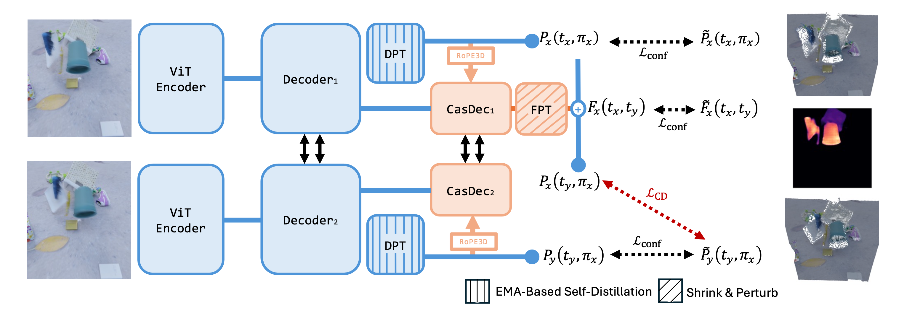
SM4RT first performs geometry reconstruction using a DUSt3R backbone (blue modules), then feeds the predicted 3D geometry into a transformer-based decoder followed by a DPT head to estimate motion (red modules). The network is trained with a fully-supervised regression loss and a weakly-supervised Chamfer loss.
Result Visualizations
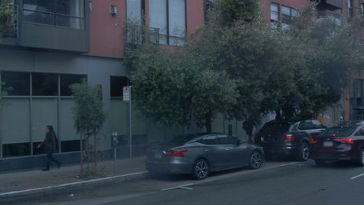
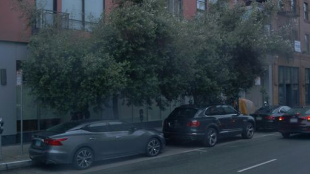
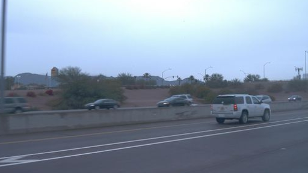
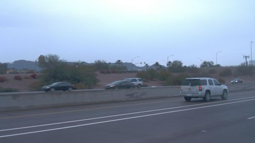
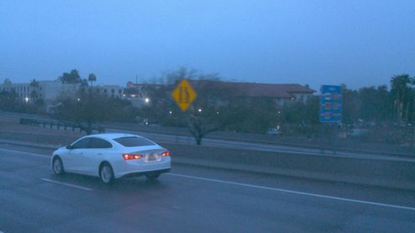
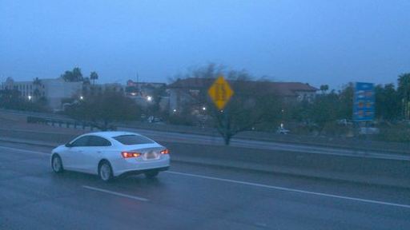
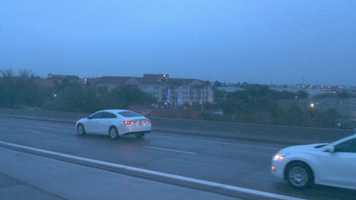
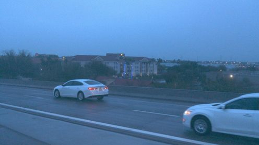
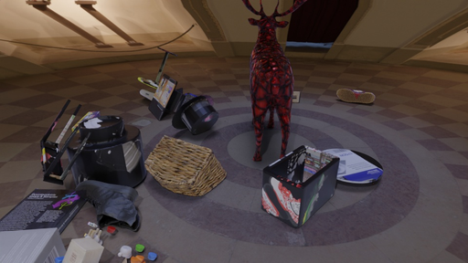
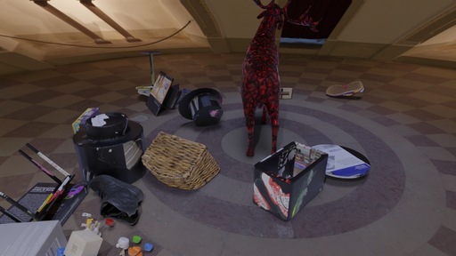
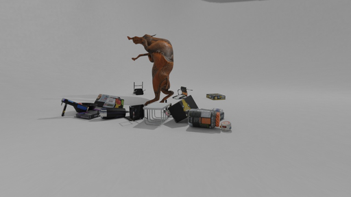
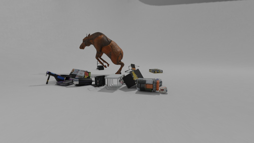
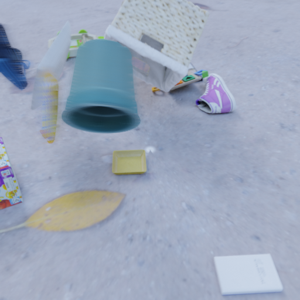
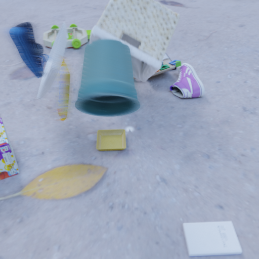
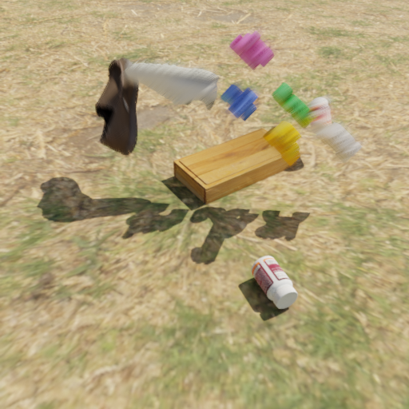
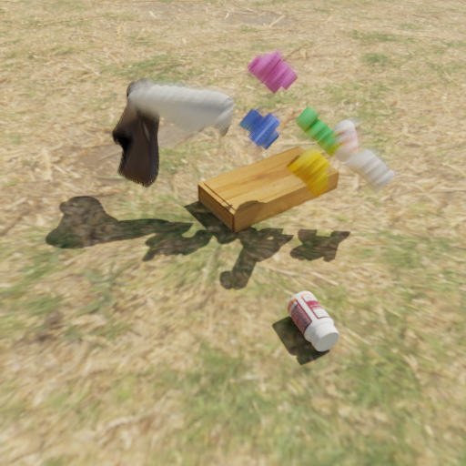
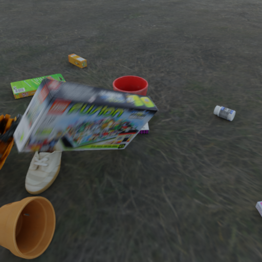
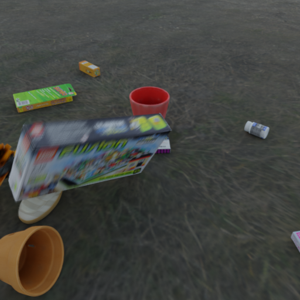
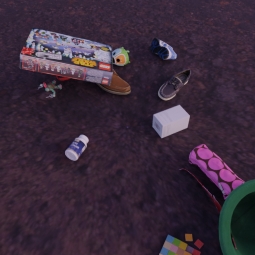
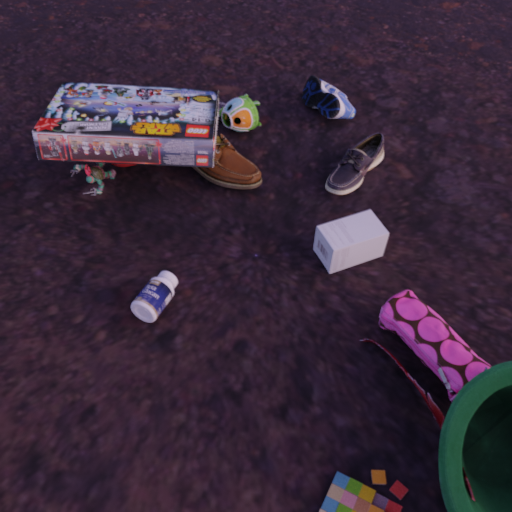
BibTeX
@article{YourPaperKey2024,
title={SM4RT: Cascaded Feed-forward Model for 4D Reconstruction},
author={Pang-Chi Lo and Jhao-Syun Lai and Tsung-Wei Ke},
institution={Carnegie Mellon University and National Taiwan University},
journal={Conference/Journal Name},
year={2026},
url={https://your-domain.com/your-project-page}
}